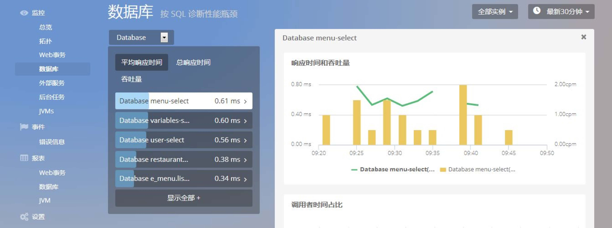
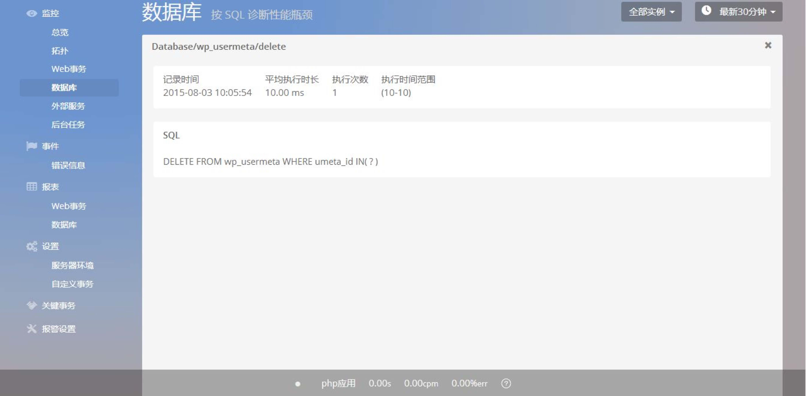

监控-数据库
该页面为数据库页面，共由 SQL 语句栏、Top5 SQL 语句响应时间图、Top5 SQL 语句吞吐量图这 3 个部分组成。
SQL 语句栏：
- SQL 语句栏展示当前应用的所有 SQL 语句。
- 在此栏头部，通过下拉列表选择数据库类型，包括“All、数据库类型选择栏：在 SQL 语句栏的头部，有一个下拉列表栏，勇于选择数据库类型。
通过下拉列表，可以选择数据库类型，包括“All、Database、选择 Database，则展示数据库的相关信息，同时会增加展示“增、 删、改、查”4 类 SQL 语句的响应时间和吞吐量图;Database、MongoDB、Redis、Memcache(d)”5 项。 - SQL 语句栏可以按照“总响应时间从长到短”、“平均响应时间从长到短”、“吞吐量从高到低”来进行排序。
- 点击单条 SQL 语句，可以打开单个 SQL 语句页面。单个SQL 语句页面，展示了当前 SQL 语句的详细信息。
- 单个 SQL 语句页面，将在后面单独作为一部分进行介绍。
Top5 SQL 语句响应时间图：
- 以面积图的方式，展示了平均响应时间 最长的 5 条 SQL 语句， 其响应时间随 时间的变化情况。

数据库类型选择栏：
在 SQL 语句栏的头部，有一个下拉列表栏，用于选择数据库类型。 通过下拉列表，可以选择数据库类型，包括 “ All、Database、MongoDB、Redis、Memcache（d） ” 5 项——选择 All，则展示所有数据库类型的整体情况;选择 Database， 则展示数据库的相关信息，同时会增加展示“增、 删、改、查”4 类 SQL 语句的响应时间和吞吐量图; 选择 MongoDB、Redis、Mencache（d），同样会相应展示其详 细信息。
Top5 SQL 语句吞吐量图：
- 以折线图的方式，展示了平均响应时 间最长的 5 条 SQL 语句， 其吞吐量 随时间的变化情况。
单条 SQL 语句
- 点击单条 SQL 语句，展示当前 SQL 语句的详细信息，分别为响应时间和 吞吐量图、调用者时间占比图和调用事务列表、慢 SQL 追踪列表。
响应时间和吞吐量图：
- 展示当前 SQL 语句的响应时间和吞吐量随时间的变 化情况。
- 用折线图展示响应时间，用柱状图展示吞吐量。
- 分别用不同的方式展示不同的数据，有效地对数据进行比对，让用户分析数据更加方便。
调用者时间占比图、调用事务列表：
- 在该条 SQL 被调用的总耗时中，各个事务调用当前 SQL 的耗时，在总耗时中所占的百分比。该指标被称为“调用者时间占比”。
- 调用事务列表，展示了调用该条 SQL 语句的各个事务，以及事务的相关信息，包括响应时间占比、平均响应时间、 吞吐量。
- 横置柱状面积图，可以更加直观地展示出百分比。


慢 SQL 追踪列表：
- 该列表展示了当前 SQL 语句发生响应时间超出阈值 时，相应 SQL 语句的追踪记录。
- 点击单条追踪记录，查看该条记录的详细信息。
- 单条追踪记录页面，将在后面单独进行介绍。
单条慢 SQL 追踪
- 点击单条慢 SQL 追踪记录，会展示当前慢 SQL 追踪记录的详细信息，分 别为记录时间、平均执行时长、执行次数、执行时间范围;同时，还展示出该 条 SQL 语句的内容（Ai 会自动隐藏 SQL 语句中的敏感信息）。对于一些明显 高于阈值的 SQL 语句，还会展示出其执行计划，以及调用该语句的堆栈信息， 方便用户排查数据库调用的问题。
